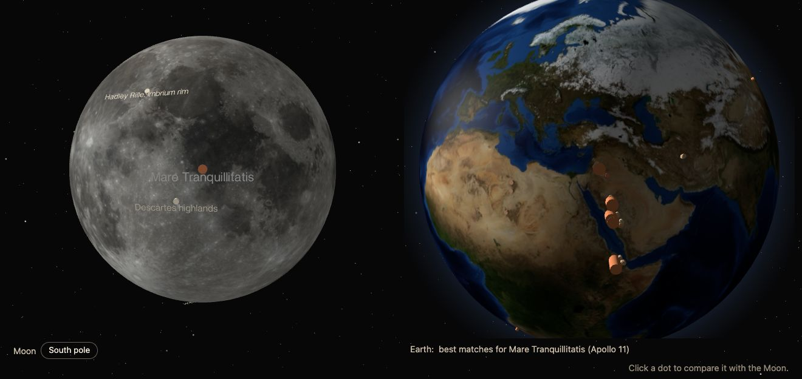

Earth's Moon twins
Pick a place on the Moon. The Earth globe turns to the places that match it best in slope, relief and rock.

Your browser cannot show the 3D globes. Open the map instead.
What we found
0.43 → 0.82 → 0.92
Shape alone misleads: on terrain, a salt desert (Dasht-e Kavir) ranks above 5 of our 7 known mare sites. With rock type, the right places come first. AUC; 0.5 is chance. We picked the look-alikes for their rock, so terrain failing alone is the finding; the gain from adding terrain is suggestive, not proven.
16 / 0
None of 16 look-alike places with the wrong rock reaches the top 100 for its lunar target.
Arabia, Afar
The best mare analogs are basalt fields in the Arabian Peninsula; the best Imbrium analogs lie in the Afar rift. Both sit outside the four well-studied regions and are less studied as lunar analogs.
Where it breaks
Every Earth analog fails somewhere.
40 K coldest spot in our Artemis III windows, yearly mean (NASA Diviner) -47 °C lowest hourly temperature at the coldest Earth match, 2001 to 2025 (NASA POWER)
Team
- Melike Kızılay: geology, lunar targets and analog interpretation
- Tarık Tuna Taşaltı: data pipeline, similarity model and validation
- Nagihan Koçcenk: water and ISRU (in-situ resource utilization) use cases
- Zeynep Naz Erkoç: known analog catalogue and hard negative analogs
We named the team after Eugene Shoemaker, who founded USGS Astrogeology and trained Apollo astronauts in geology at analog sites like Meteor Crater.